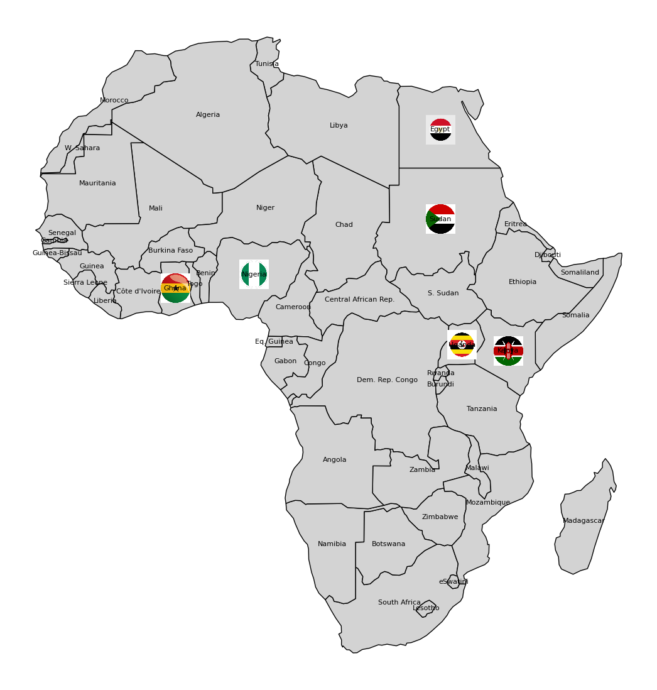

Member Labs

- Uganda: Aeronautics and Space Science Bureau — host of the inaugural AfDevSat workshop in 2025.
- Egypt: Egyptian Space Agency — project lead and training coordinator.
- Kenya: Kenya Space Agency — active in payload planning and training.
- Nigeria: National Space Research and Development Agency — contribution in data systems and environmental focus.
- Sudan: Sudanese National Committee for Space — participates in satellite operations and research.
- Ghana: All Nations University — part of the satellite systems development.